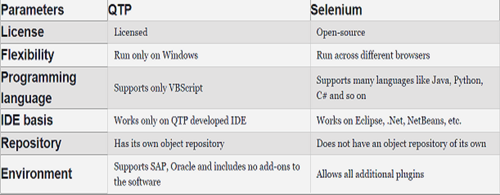

QTP
QTP is an acronym for Quick Test Professional which was originally developed by Mercury Interactive and was later acquired by HP (Hewlett Packard), and they called it UFT (Unified Functional Testing). UFT was combined with the HP QTP and HP Service Test into a single software package which was apparently available until 2016 when the whole division was sold to Microfocus.
QTP is an automation testing tool that helps testers to perform automated functional testing seamlessly, without monitoring the system in intervals.
1- QTP/UFT is basically designed to test various software applications and their environment.
2- It is licensed and the cost of this tool is very high.
3- QTP is used to test UI-based test cases and can even automate non-UI test cases such as file operations, database testing, and so on.
4-The user needs to have the knowledge of VBScript to run test cases.
5-This scripting engine installation is not required explicitly as it is available as a part of the Windows OS.
6-QTP works only on the Windows platform and cannot work across other browsers like Chrome, Firefox, and so on.
7-It also helps in providing quality assurance to the software under test.
8-It is easy to use because of its ease of navigation, result validation, and generation of reports.
QTP Advanture
1- QTP can test web, mobile, and desktop applications.
2-It has its own in-built object repository that helps in organizing the data in the application.
3-The rate of automation is fast compared to that of Selenium.
4-QTP can also handle controls within a browser like a favorite bar, address bar, back, and forward buttons, etc.
5-It also provides enterprise support if the user faces some issue.
6-Test reports are automatically generated.
QTP vs Selenium: Essential Differences
QTP and Selenium are the two predominantly used automation testing tools which are widely used by all software testers.
@ We’ll first start comparing them based on their license.
1-License: QTP is licensed, the cost is very high and the user has to pay for all the versions of this tool. In contrast, Selenium is an open-source tool and the user does not have to pay for any of the versions of this tool.2-Flexibility: QTP is not very flexible when it comes to executing the test cases across different platforms. It mainly supports Windows and executes the tests there. It also tests web, mobile, and desktop applications whereas Selenium is highly flexible because the test cases can run across different platforms like Chrome, Firefox, IE, and so on. It can only test web applications and cannot test mobile or desktop applications.
3-Programming language: QTP test scripts are written only in VBScript which is an active scripting language developed by Microsoft. The test scripts cannot be written in any simple programming language, whereas Selenium test scripts are written in the simple user-friendly programming languages like Java, Python, C#, Scala, and Ruby.
4-IDE basis: QTP test cases only work on QTP-developed environments and not on any other IDEs apart from this whereas Selenium test scripts are integrated and run across different IDEs like Eclipse, NetBeans, .Net and so on.
5-Repository: QTP has an in-built object repository which is a common storage location for all objects, and is a collection of all the objects and its properties. Selenium does not have a inbuilt repository as it uses the web elements in the user interface to test the applications.
6-Environment: QTP supports different environments like SAP, Oracle, and so on but does not support additional plugins to the software, whereas Selenium supports all additional plugins alongside its features.
